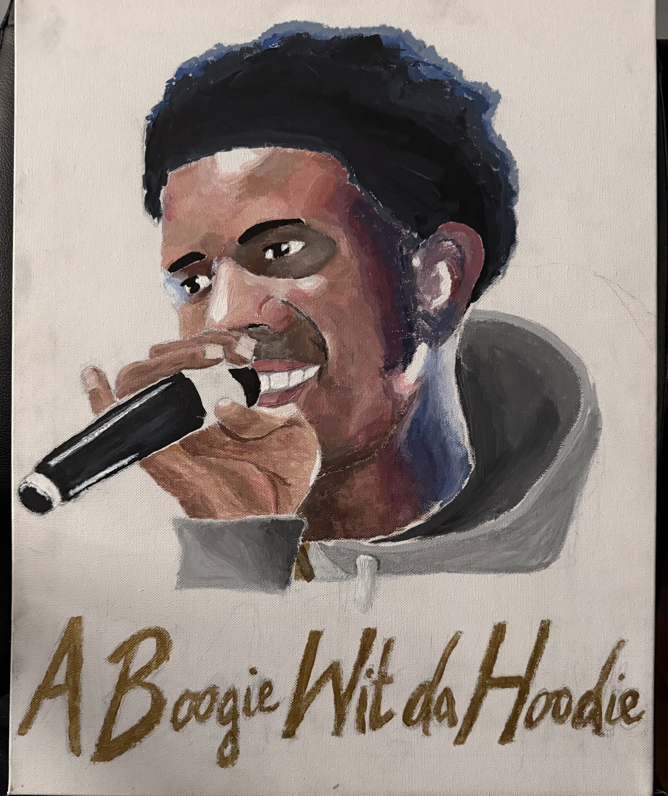
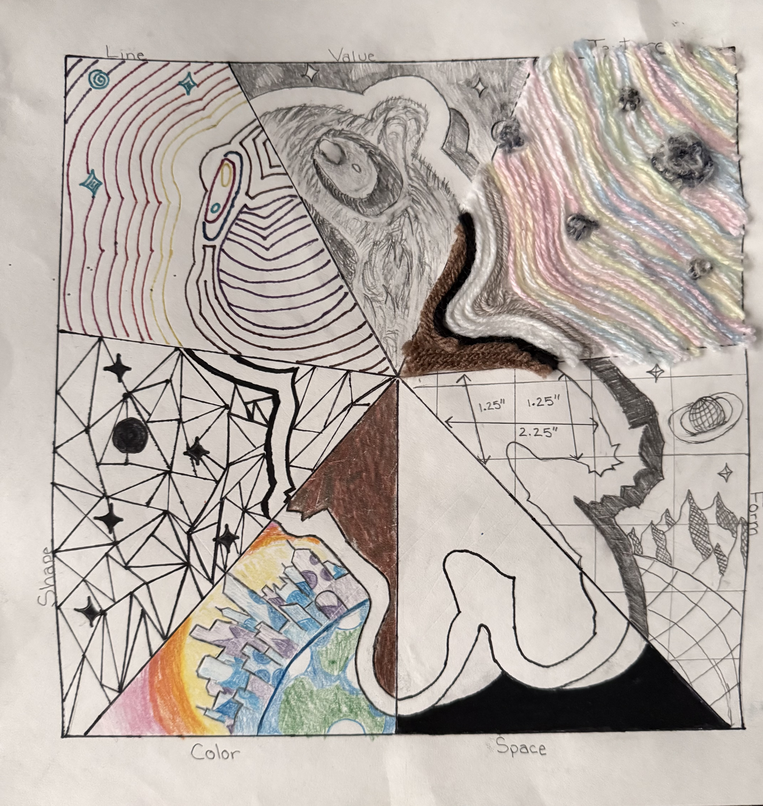

PROJECT NOTES / 01
FORMFUNCTIONFIT
MAKING · MOVEMENT · CURIOSITY
I’m Benjamin — a recent Computational Biology graduate, competitive runner, and curious maker exploring the space between people, performance, and products.
Explore my work ↘01 / PRODUCT CONCEPT
A wearable concept exploring ways to reduce side-to-side movement while sprinting. Two documents trace the thinking so far; the physical prototype is still a work in progress.
PHYSICAL BUILD / WIP
This part is intentionally unfinished. I’ll add photos of the physical build, material choices, fit iterations, and what I learn as the prototype develops.
In progressThe PDF cards open the files in a new tab. Add your own documents to the media folder using the filenames in the setup guide.
02 / MATERIAL & CRAFT
Sewing projects and small construction experiments — a place to show the details, the process, and the finished pieces.

media/sewing-1.jpgReplace this with a short note about what you made.

media/sewing-2.jpgReplace this with a short note about what you made.
03 / SIDE QUESTS
A flexible collection for personal builds, experiments, and ideas that don’t fit neatly anywhere else.

media/personal-1.jpgPERSONAL PROJECT
A few sentences about the idea, what you tried, and what you learned.

media/personal-2.jpgPERSONAL PROJECT
A few sentences about the idea, what you tried, and what you learned.

media/personal-3.jpgPERSONAL PROJECT
A few sentences about the idea, what you tried, and what you learned.
HAVE A GOOD PROJECT IN MIND?